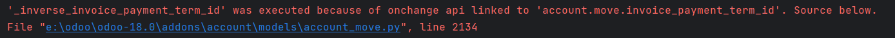
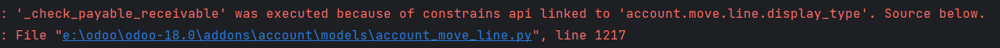
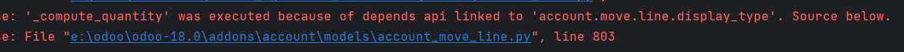
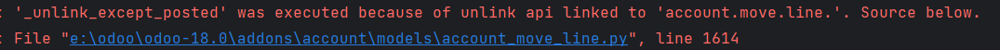
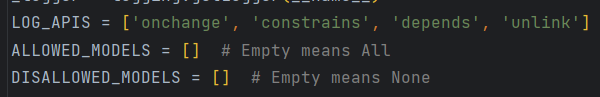

Looking for a skilled and reliable Odoo Developer to bring your business ideas to life? or to fix things? or to analyze unwanted results? or to do whatever in odoo
Let’s build something great together! I specialize in custom module development, ERP implementation, and performance tuning tailored to your needs.
This module logs the executions of Odoo API methods: onchange, constraints, depends, and unlink. It provides accessible links to these logs for better traceability and debugging. The module is compatible with Community, Enterprise, and Odoo.sh editions.
Below are examples of how the module traces the following methods:




